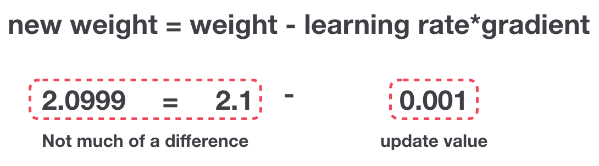

Recurrent Neural Network is a generalization of feedforward neural network that has an internal memory.
RNN is recurrent in nature as it performs the same function for every input of data while the output of the current input
depends on the past one computation. After producing the output, it is copied and sent back into the recurrent network. For making a decision,
it considers the current input and the output that it has learned from the previous input.
Unlike feedforward neural networks, RNNs can use their internal state (memory) to process sequences of inputs.
This makes them applicable to tasks such as unsegmented, connected handwriting recognition or speech recognition.
In other neural networks, all the inputs are independent of each other. But in RNN, all the inputs are related to each other.
Working of RNN
First, it takes the X(0) from the sequence of input and then it outputs h(0) which together with X(1) is the input for the next step.
So, the h(0) and X(1) is the input for the next step. Similarly, h(1) from the next is the input with X(2) for the next step and so on.
This way, it keeps remembering the context while training.
The formula for the current state is
ht = f(ht-1, xt)
Applying Activation Function:
ht = tanh(Whh * ht-1 + Wxh * xt)
W is weight, h is the single hidden vector, Whh is the weight at previous hidden state,
Whx is the weight at current input state, tanh is the Activation funtion, that implements a Non-linearity that squashes the activations to the range[-1.1]
For better understanding of RNNs and the Math behind it along eith the code,
check out the jupyter notebook
here.
The Problem, Short-term Memory
Recurrent Neural Networks suffer from short-term memory.
If a sequence is long enough, they’ll have a hard time carrying information from earlier time steps to later ones.
So if you are trying to process a paragraph of text to do predictions, RNN’s may leave out important information from the beginning.
During back propagation, recurrent neural networks suffer from the vanishing gradient problem.
Gradients are values used to update a neural networks weights.
The vanishing gradient problem is when the gradient shrinks as it back propagates through time.
If a gradient value becomes extremely small, it doesn’t contribute too much learning.

So in recurrent neural networks, layers that get a small gradient update stops learning.
Those are usually the earlier layers.
So because these layers don’t learn, RNN’s can forget what it seen in longer sequences, thus having a short-term memory.
LSTM’s and GRU’s as a solution
LSTM ’s and GRU’s were created as the solution to short-term memory.
They have internal mechanisms called gates that can regulate the flow of information.
These gates can learn which data in a sequence is important to keep or throw away.
By doing that, it can pass relevant information down the long chain of sequences to make predictions.
Almost all state of the art results based on recurrent neural networks are achieved with these two networks.
LSTM’s and GRU’s can be found in speech recognition, speech synthesis, and text generation.
You can even use them to generate captions for videos.
Long Short Term Memory (LSTM)
An LSTM has a similar control flow as a recurrent neural network.
It processes data passing on information as it propagates forward.
The differences are the operations within the LSTM’s cells.
These operations are used to allow the LSTM to keep or forget information.
Core Concept
The core concept of LSTM’s are the cell state, and it’s various gates.
The cell state act as a transport highway that transfers relative information all the way down the sequence chain.
You can think of it as the “memory” of the network. The cell state, in theory, can carry relevant information throughout the processing of the sequence.
So even information from the earlier time steps can make it’s way to later time steps, reducing the effects of short-term memory.
As the cell state goes on its journey, information get’s added or removed to the cell state via gates.
The gates are different neural networks that decide which information is allowed on the cell state.
The gates can learn what information is relevant to keep or forget during training.
Sigmoid
Gates contains sigmoid activations.
A sigmoid activation is similar to the tanh activation.
Instead of squishing values between -1 and 1, it squishes values between 0 and 1.
That is helpful to update or forget data because any number getting multiplied by 0 is 0, causing values to disappears or be “forgotten.”
Any number multiplied by 1 is the same value therefore that value stay’s the same or is “kept.”
The network can learn which data is not important therefore can be forgotten or which data is important to keep.
Forget Gate
First, we have the forget gate.
This gate decides what information should be thrown away or kept.
Information from the previous hidden state and information from the current input is passed through the sigmoid function.
Values come out between 0 and 1. The closer to 0 means to forget, and the closer to 1 means to keep.
Input Gate
To update the cell state, we have the input gate.
First, we pass the previous hidden state and current input into a sigmoid function.
That decides which values will be updated by transforming the values to be between 0 and 1. 0 means not important,
and 1 means important. You also pass the hidden state and current input into the tanh function to squish values between -1 and 1 to help regulate the network.
Then you multiply the tanh output with the sigmoid output. The sigmoid output will decide which information is important to keep from the tanh output.
Cell State
Now we should have enough information to calculate the cell state.
First, the cell state gets pointwise multiplied by the forget vector.
This has a possibility of dropping values in the cell state if it gets multiplied by values near 0.
Then we take the output from the input gate and do a pointwise addition which updates the cell state to new values that the neural network finds relevant.
That gives us our new cell state.
Output Gate
Last we have the output gate.
The output gate decides what the next hidden state should be.
Remember that the hidden state contains information on previous inputs.
The hidden state is also used for predictions.
First, we pass the previous hidden state and the current input into a sigmoid function.
Then we pass the newly modified cell state to the tanh function.
We multiply the tanh output with the sigmoid output to decide what information the hidden state should carry.
The output is the hidden state. The new cell state and the new hidden is then carried over to the next time step.
Together the different gates make up an LSTM.
For better understanding of LSTMs and the Math behind it along eith the code,
check out the jupyter notebook
here.
Gated Recurrent Unit (GRU)
So now we know how an LSTM work, let’s briefly look at the GRU.
The GRU is the newer generation of Recurrent Neural networks and is pretty similar to an LSTM.
GRU’s got rid of the cell state and used the hidden state to transfer information.
It also only has two gates, a reset gate and update gate.
Update Gate
The update gate acts similar to the forget and input gate of an LSTM.
It decides what information to throw away and what new information to add.
Reset Gate
The reset gate is another gate is used to decide how much past information to forget.
For better understanding of GRUs and the Math behind it along eith the code,
check out the jupyter notebook
here.
LSTM vs GRU
For comparision let us look at their perfomance on the same dataset:
GRU
LSTM
Cells
16
16
Epochs
10
10
Parameters
864
1152
Accuracy [%]
91.2
92.5
Training Time
2h 14min
2h 43min
To sum up....
RNN’s are good for processing sequence data for predictions but suffers from short-term memory.
LSTM’s and GRU’s were created as a method to mitigate short-term memory using mechanisms called gates.
Gates are just neural networks that regulate the flow of information flowing through the sequence chain.
LSTM’s and GRU’s are used in state of the art deep learning applications like speech recognition, speech synthesis, natural language understanding, etc.


 These operations are used to allow the LSTM to keep or forget information.
These operations are used to allow the LSTM to keep or forget information.


 Together the different gates make up an LSTM.
Together the different gates make up an LSTM.